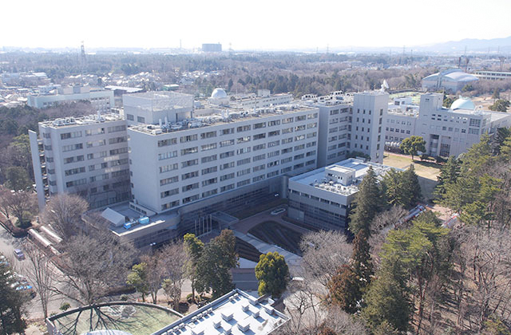
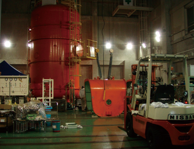
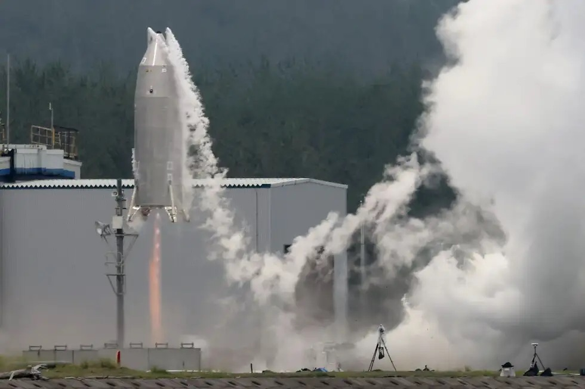

MAIN CAMPUS
JAXA相模原キャンパス
〒252-5210 神奈川県相模原市中央区由野台3-1-1
宇宙科学研究所（ISAS）の中核拠点。研究室としての日常的な活動拠点で、理論検討・数値解析・実験装置の設計や、ゼミ・研究打ち合わせをここで行っています。
できること：理論・数値解析、設計検討、ゼミ・研究打ち合わせ、小規模な要素実験
公式ページを見る活動拠点
当研究室はJAXA宇宙科学研究所に所属し、相模原キャンパスでの理論・設計研究に加え、あきる野実験施設・能代ロケット実験場での燃焼実験・飛行実験を軸に活動しています。

MAIN CAMPUS
〒252-5210 神奈川県相模原市中央区由野台3-1-1
宇宙科学研究所（ISAS）の中核拠点。研究室としての日常的な活動拠点で、理論検討・数値解析・実験装置の設計や、ゼミ・研究打ち合わせをここで行っています。
できること：理論・数値解析、設計検討、ゼミ・研究打ち合わせ、小規模な要素実験
公式ページを見る
TEST FACILITY
〒197-0801 東京都あきる野市菅生1918-1
ロケット・探査機搭載推進系に関わる基礎的・教育的実験研究を行う施設。耐爆試験室や真空燃焼試験設備を備え、固体・ハイブリッドロケットの燃焼実験など、小規模な要素実験を安全に実施できます。
できること：耐爆試験室での燃焼実験、真空燃焼試験、固体・ハイブリッドロケット要素実験
公式ページを見る
TEST FACILITY
〒016-0179 秋田県能代市浅内字下西山1
固体ロケットモータの地上燃焼試験、液体酸素・液体水素ロケットエンジンの基礎実験に加え、再使用ロケット実験機（RV-X等）の離着陸試験を行っている実験場です。
できること：エンジン地上燃焼試験、液体水素・液体酸素実験、離着陸飛行実証実験
公式ページを見る